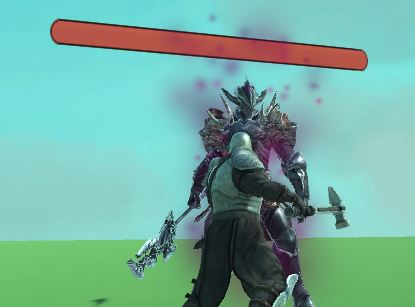

Nash Roy
EDUCATION
University of Central Florida
- Currently working towards B.S. in computer science, and a minor in mathematics. Currently holding A.A. Degree.
WORK EXPERIENCE
AllProWebTools, Davenport, FL — Intern/Web Developer September 2017 - November 2017
- Took part in Development of AllProWebTool's service management.
- Debugged and tested new release of eCommerce tool demo.
- Implemented a tutorial for new iteration of management tool.
- Documented and organized changes during development cycle.
Barnes and Nobles, Oviedo, FL — Bookseller September 2017 - Present
- Worked on setting up and participating in-store events.
- ne of the top salesmen for Memberships and focused products.
- Tasked with training employees.
SeaWorld, Orlando,FL — Photo Sales, Clerk June 2016 - September 2016
- Oversaw transactions and maintained record of inventory regularly.
- Maintained oversight of store during manager shift transition.
- Provided services beyond sales clerk responsibilities such as fixing software issues, and coaching.
- employees during operational hardware change.
OTHER INVOLVEMENT/ACTIVITIES
Race/Culture Documentary Project
- Worked on a social documentary that focuses on prejudice that many ethnic/religious groups face.
- Personal responsibilities included writing the script, directing and edits.
Orlando Regional Medical Center, Orlando— Volunteer Receptionist and Guest Services Representative.
- For receptionist responsibilities; notified nurses of patients’ medical needs and provided food, blankets to patients.
- For postoperative guest services responsibilities; communicated patient status to patient’s family.
Unity Project: Indignation
- Conceptual project focused on combat systems.
- Personal tasks include creating the AI and refining combat mechanics.
- Strong focus on version control and pushing changes working along with another programmer.
COMPUTER SKILLS AND OTHER SKILLS
- Proficient in: java, C, C# HTML, CSS, PHP, and Javascript.
- Projects in Unity and Unreal Engine.
- Experience with LESS, SASS, React, WordPress, NODE, and Bootstrap.
- Certified in Photoshop.
- Very comfortable working with and engaging customers/clients.
Examples of my work
Indignation:

- Player in the forefront faces a grueling enemy!
- This is a very early screenshot of the game, before we were able to make it look pretty.
- Almost a year into development and still a lot of work to be done!